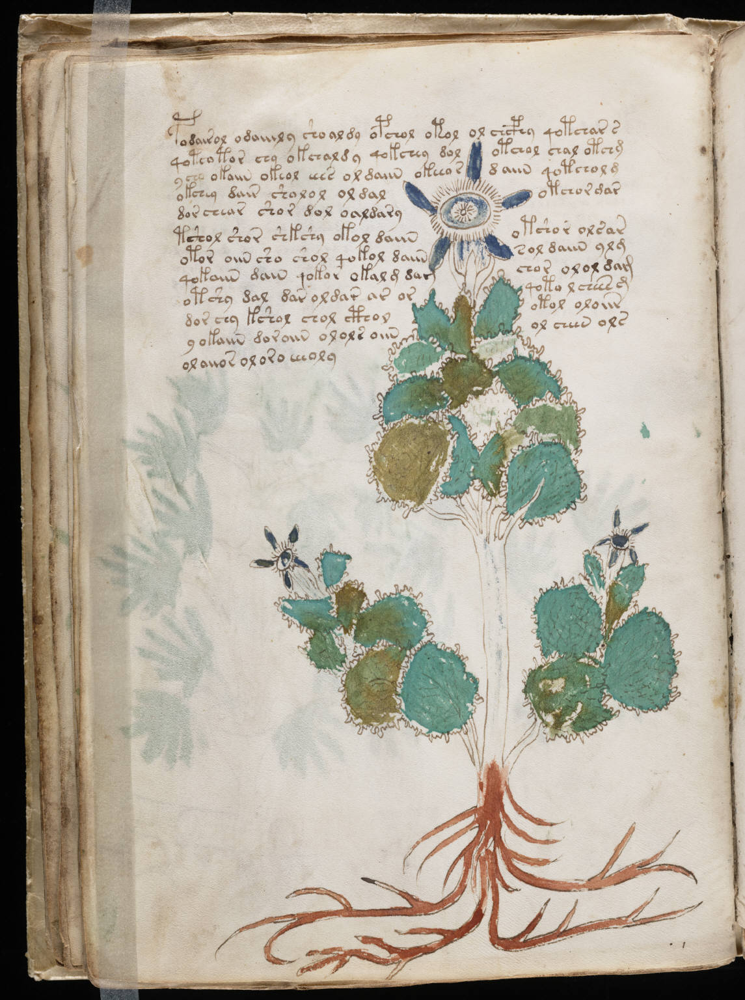

f23v
1podairol odaiiily shoaldy opchol otol ol chcphy qotchar s2qoteotor chy okchafdy qokchey dolotchol chal otchm3ycho okaiin okeol eees oldaiin okeeordaiin qotcholm4okchey dair sholol oldalotchor mar5dor chear shor dol oaldary6tshol shor shkshy okol daiinotshor olsar7otor oiin sho shol qokol daiinsol daiin ylg8qokaiin dain qokor okal g damchor olol dam9otshy dal dar oldar ar orqoto l chees g10dor chy kshol chol ctholotol oloiir11y okaiin doroiin olols oiinol cheen ols12olaiior oloro eeeoly
